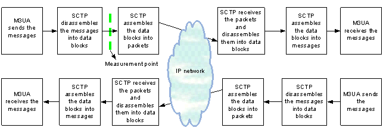

Description
SCTP Link Measurement verifies some important information about the SCTP links, such as number of retransmitted data blocks and number of error packets. This helps you get knowledge of the traffic load and number of error packets.
The following figure shows how the SCTP link processes data.

Data Chunk: For the effective utilization of transmission bandwidth, several PDUs from the upper layer are capsulated into one SCTP PDU for transmission. Each PDU from the upper layer is called a chunk.
Measurement Object
SCTP link.
Measurement Counter
The following table lists the measurement counters related to SCTP Link Measurement.
Counter |
Refer to Section... |
|---|---|